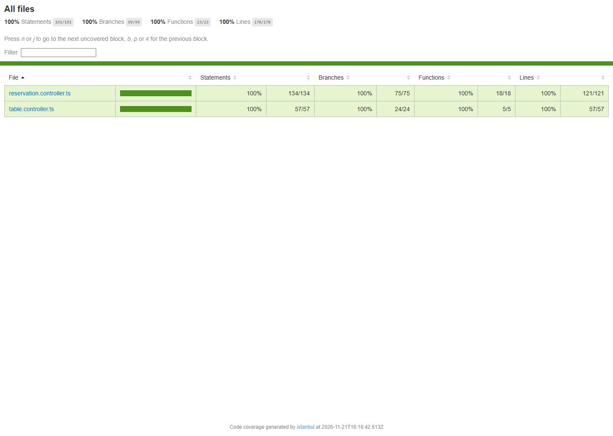
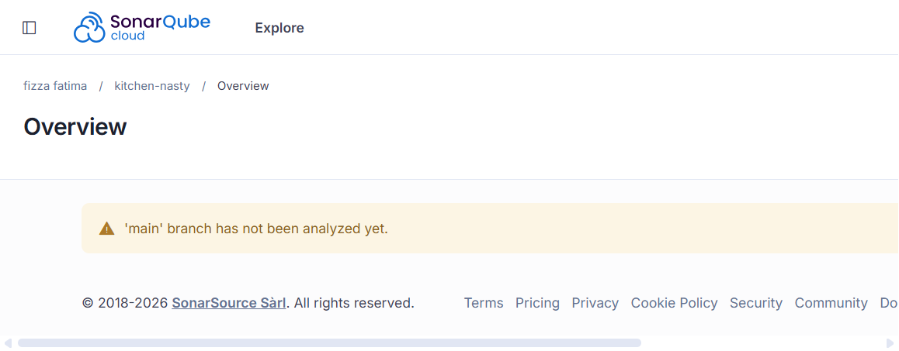
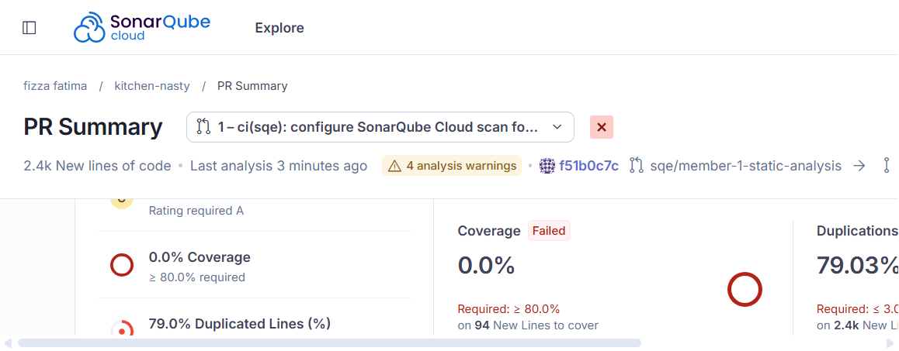
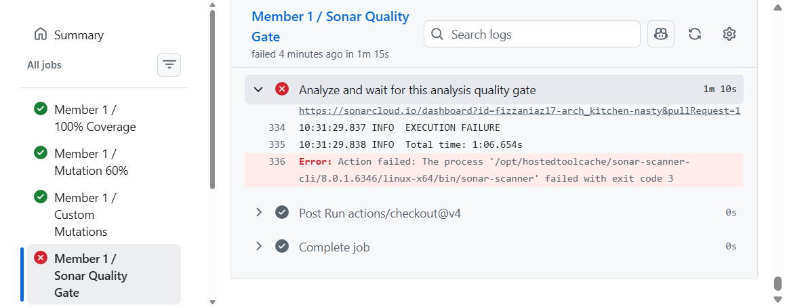

Member 1: Static analysis, white-box testing, mutation testing, CI quality gates, risks and exit criteria
| Criterion | Actual evidence | Status |
|---|---|---|
| Reproducible tooling | Vitest 4.0.18, coverage-v8 4.0.18, Stryker 9.1.1, SonarQube Cloud scan action v7 | Pass |
| White-box suite | 56/56 tests passed across all reservation/table controller functions | Pass |
| Coverage target | 100% statements and 100% branches; 100% functions and lines | Pass |
| Mutation final | 556 mutants; 351 killed; 204 survived; 0 no coverage; 1 timeout; score 63.31% | Pass (60%) |
| SonarQube Cloud | PR analysis uploaded at SHA f51b0c7; quality gate failed on reliability, security, coverage, and duplication | Fail (analysis completed) |
| Browser use cases | 10/10 Playwright flows passed across two Member 1 use cases | Pass |
| CI and PR evidence | PR #1 open; Member 1 coverage, mutation, and custom jobs pass; Sonar/aggregate fail. Separate CI E2E job fails on Playwright/Ubuntu 26.04 support. | Fail |
| ID | Rule | Technique | Evidence |
|---|---|---|---|
| M1-BR-01 | Party size is an integer from 1 through 50. | Equivalence partitions and boundaries 0, 1, 50, 51 | Rejected cases assert no write; accepted boundaries assert Prisma payload. |
| M1-BR-02 | Creation requires a customer principal and active location. | MCC and MC/DC | Unauthenticated, staff, missing location, inactive location, and valid customer rows. |
| M1-BR-03 | Partial update changes supplied fields only and supports explicit null. | Data-flow and branch testing | Invalid, missing record, omitted fields, null fields, and all supplied fields. |
| M1-BR-04 | Availability needs an active sufficiently large unreserved table. | Compound condition and conflict partitions | Required query, default party size, fully occupied and available slots. |
The graph models updateReservation. Assignment nodes on each true optional-field edge are counted even though the compact visual groups the branch labels.
Location rejection is !location || !location.isActive. Let A = location exists and B = active.
| Case | A exists | B active | B executes? | Reject | Test |
|---|---|---|---|---|---|
| MCC-01 | F | N/A | No (short-circuit) | T | Missing location |
| MCC-02 | T | F | Yes | T | Inactive location |
| MCC-03 | T | T | Yes | F | Accepted boundary cases |
MC/DC pairs: A uses MCC-01 versus MCC-03, acknowledging B is structurally unavailable when A is false. B uses MCC-02 versus MCC-03. B is masked in MCC-01 by JavaScript short-circuiting.
| Rule | Complete MCC rows | MC/DC independence pairs |
|---|---|---|
| M1-BR-01 | Non-number; non-integer; below 1; valid 1–50; above 50 | Number: non-number/valid. Integer: decimal/valid. Lower: 0/1. Upper: 50/51. |
| M1-BR-02 | Not customer; customer+missing location; customer+inactive; customer+active | Customer: reject/accept. Exists: missing/active. Active: inactive/active. |
| M1-BR-03 | Two rows (omitted/supplied) for each of six independent unary field decisions | Each field's omitted/supplied rows form its pair; null is proven supplied. |
| M1-BR-04 | Time mismatch/no ID; mismatch/ID; match/no ID; match/ID | Time: mismatch+ID/match+ID. ID: match+no ID/match+ID. Final slot: zero/one remaining table. |
The complete feasibility tables, masking notes, and test mapping are provided in mcc-mcdc.md.
npm run coverage:member1 executed 56 tests: 56 passed, 0 failed. The selected-controller denominator achieved 100% statements (191/191), 100% branches (99/99), 100% functions (23/23), and 100% lines (178/178).| Selected controller | Statements | Branches | Functions | Lines |
|---|---|---|---|---|
reservation.controller.ts | 100% (134/134) | 100% (75/75) | 100% (18/18) | 100% (121/121) |
table.controller.ts | 100% (57/57) | 100% (24/24) | 100% (5/5) | 100% (57/57) |
reservation.controller.ts and table.controller.ts, and the generated V8 report lists no uncovered lines.
Figure 1. Browser-rendered Vitest HTML coverage report from the 21 November 2026 run; it shows 191/191 statements, 99/99 branches, 23/23 functions, and 178/178 lines covered.
Evidence: packages/server/coverage/member-1/coverage-summary.json and lcov.info. This report covers the two selected server controllers only; it is not repository-wide coverage.

Figure 2. SonarQube Cloud reports 0.0% coverage on 94 new lines to cover for PR #1, analyzed at SHA f51b0c7c63ead6740d6de8b47024093df4f5b86f. This new-code measure is distinct from the 100% Member 1 controller coverage above.

Figure 3. Browser-rendered Stryker HTML report from the genuine pre-strengthening baseline.
| Class | Representative surviving behavior | Reason | Required action |
|---|---|---|---|
| Weak assertion | Response object removed or success boolean flipped | Some rejection tests assert status/write prevention but not the entire body | Add exact response assertions |
| Missing test | Prisma where object removed | Several tests do not assert lookup/update query identity | Assert exact Prisma call payload |
| Missing test | Rename condition forced false | Changed-name unique and duplicate rows are not both implemented | Add both feasible MCC rows |
| Missing test | isActive default true changed to false | No successful create-table test omits isActive | Assert persisted default |
| Equivalent candidate | Mutation in output field not observable under current mocked return | Production behavior may be determined by mocked Prisma response | Confirm invariant before classifying equivalent |
Fifteen genuine current-run survivors are classified in mutation-analysis.md; 13 were killed by stronger response/query assertions and two remain explicitly identified. Two application-specific custom mutants were both killed in an isolated worktree. The final score is 63.31%, passing the retained 60% breaking threshold.
Two Member 1 use cases define and automate a main flow, two alternatives and two exceptions each. npm run test:e2e:member1 passed all 10 flows in 24.6 seconds using installed Chrome and deterministic synthetic route state.
The remote Member 1 run passed coverage, mutation, and custom mutations. Sonar and the aggregate required job failed because the Sonar quality gate failed. The separate repository E2E check failed before tests with Playwright does not support chromium on ubuntu26.04-x64; this runner/toolchain compatibility failure is not presented as a passing test.
PR #1 was analyzed at f51b0c7c63ead6740d6de8b47024093df4f5b86f (base d6af7237e9569ebeab19ccab375362f9d144e25e). The Member 1 LCOV artifact was downloaded and verified before the scan; Sonar processed the report and uploaded the analysis. The action exited with code 3 only after checking the failed quality gate.

Figure 4. SonarQube Cloud project Overview warns that the main branch has not been analyzed yet. The workflow adds a main-branch push trigger so the baseline runs after the team's PR review and merge.

Figure 5. Actual PR quality gate failure at SHA f51b0c7c63ead6740d6de8b47024093df4f5b86f: reliability C (required A), security C (required A), new-code coverage 0.0% (required at least 80.0%), and duplicated lines 79.0% (allowed at most 3.0%).

Figure 6. GitHub Actions Sonar job for the analyzed SHA. Coverage download and the LCOV existence check passed; the scan step failed after Sonar reported the failed quality gate.
The Sonar Overview warning is 'main' branch has not been analyzed yet. The PR scan nevertheless completed; no scanner error said that a first main analysis was required to upload the PR analysis. The project currently reports 19 new issues, and the 0.0% coverage measure applies to 94 new lines to cover (including 94 uncovered lines in e2e), distinct from the 100% controller coverage result.
The PR remains open for team review. No direct push to or merge into main was performed. Earlier local Docker attempts are historical and are detailed in quality-report.md.
| Highest risk | L×I | Mitigation | Linked criterion |
|---|---|---|---|
| Double booking because creation does not enforce conflicts | 4×5 = 20 Critical | Transactional conflict check and concurrency tests | EC-01 coverage |
| Invalid table assignment capacity/location/activity | 4×5 = 20 Critical | Assignment validation and MCC/boundary tests | EC-01, EC-02 |
| Status lifecycle is not enforced | 4×4 = 16 High | Transition map and state tests | EC-01 |
| Coverage/mutation scope exceeds schedule | 4×4 = 16 High | Inventory and prioritize critical rules | EC-01, EC-02 |
| ID | Target | Actual | Status |
|---|---|---|---|
| EC-01 | 100% statements and branches | 100% / 100% across both selected controllers | Pass |
| EC-02 | Mutation score at least 60%; 15 survivors classified | 63.31%; 15 classified, two custom operators killed | Pass |
| EC-03 | Sonar quality gate with imported LCOV | Analysis at f51b0c7 completed; new-code coverage 0%, reliability/security C, duplication 79% | Fail |
| EC-04 | Required GitHub checks and reviewed PR | PR #1 open; coverage/mutation/custom pass; Sonar/aggregate fail; separate E2E fails on unsupported Ubuntu 26.04 Chromium | Fail |
White-box coverage, MCC/MC/DC, mutation threshold/custom operators, and both local browser use cases pass. The real Sonar PR analysis and CI evidence are now captured, but the quality gate and aggregate job fail, and the separate CI E2E job is blocked by its Ubuntu/Playwright Chromium mismatch. The main baseline awaits the reviewed PR merge, so the overall Member 1 release decision remains hold.